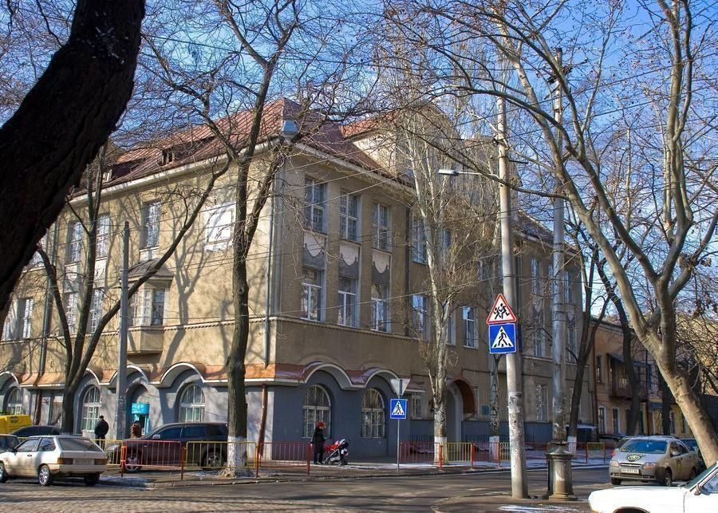

Одеська гімназія № 107
ОДЕСЬКА ГІМНАЗІЯ № 107 ОДЕСЬКОЇ МІСЬКОЇ РАДИ ОДЕСЬКОЇ ОБЛАСТІ
- Адреса: 65006, Одеська область, м. Одеса, вул. Кіри Муратової (колишня Льва Толстого), буд. 30
- Телефон: (048) 726-87-70
- E-mail: gim107od@ukr.net

Україна / Odesa / Одесса / вул. Кіри Муратової, 30

Шкільний Омбудсмен
Гімназія № 107